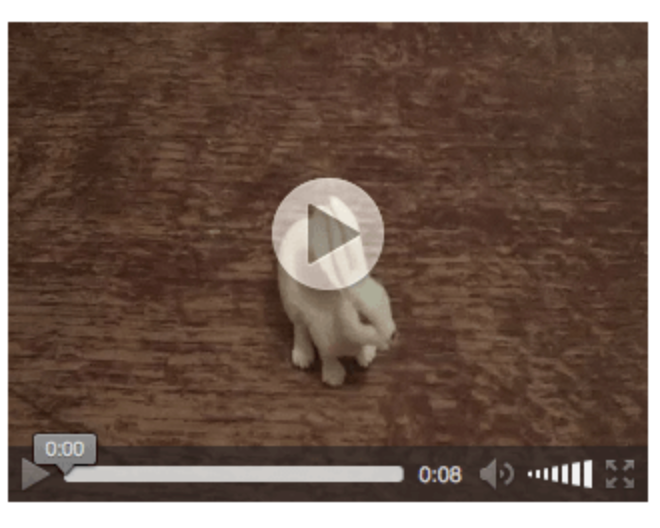

Imagens e outros elementos Multimedia
No início a web consistia apenas em texto, mas rapidamente foram adicionados elementos gráficos. Imagens, Vídeos, Audio, Realidade Aumentada ou Jogos são hoje elementos comuns nas páginas modernas.
Imagens
O elemento HTML mais simples para colocar imagens é o elemento <img>. Na sua forma mais básica uma imagem pode ser incluida indicando apenas o atributo src:

<img src="dinosaur.png" />
No entanto esta forma minimalista não deve ser utilizada, uma vez que não inclui o atributo alt que deve estar presente em todas as imagens uma vez que descreve textualmente a imagem para utilizadores com necessidades especiais ou para situações em que a ligação à internet do utilizador é muito lenta. Uma melhor solução é:
<img src="dinosaur.png" alt="Ilustração de um Tiranossauro Rex" />
O atributo alt deve estar sempre presente, mesmo quando se utilizam imagens apenas decorativas (por exemplo um separador horizontal). Nestes casos o atributo deve existir e estar vazio alt=“”. A razão para isto é que caso o atributo não exista, um leitor de ecrã irá informar o utilizador lendo o nome da imagem (algo que não é importante nessa situação) e com a presença de alt=“” irá indicar apenas a existência de uma imagem. Outra forma alternativa adicionar o atributo role=“presentation” a estas imagens1.
O atributo src indica o loca onde se encontra a imagem. No exemplo a imagem está na mesma pasta do ficheiro html. No entanto é boa prática organizar os ficheiros em pastas apropriadas. Assim, se utilizarmos uma subpasta chamada imagens para guardar todas as imagens o código seria:
<img src="imagens/dinosaur.png" alt="Ilustração de um Tiranossauro Rex" />
o atributo src pode ser também um URL completo e até apontar para um servidor exterior. No entanto esta não é uma boa prática uma vez que devemos sempre controlar os conteúdos que publicamos. Utilizando uma ligação exterior não há garantias sobre a disponibilidade futura do recurso.
Largura e altura
Os atributos width e height podem ser utilizados para definir a largura e altura do elemento <img>. São dois números inteiros sem unidades que representam as medidas em pixeis. Quando os valores utilizados são diferentes do tamanho real da imagem o browser irá redimensionar a imagem para a ajustar às medidas do elemento <img>.
<img src="imagens/dinosaur.png"
alt="Ilustração de um Tiranossauro Rex"
width="360"
height="360" />
Neste caso a imagem utilizada é quadrada com 360 pixeis tanto de largura como de altura.
Deve-se sempre indicar qual a largura e altura das imagens. A principal razão prende-se com o facto de estas medidas permitirem ao browser reservar o espaço necessário para a imagem, mesmo que os conteúdos da imagens ainda não tenham sido carregados. Caso não se coloquem as dimensões da imagem, o browser só saberá as medidas depois de carregar a imagem e obrigará a fazer um reflow da página que entretanto já estava parcialmente carregada provocando movimentação dos elementos de texto. Para evitar isso deve-se indicar sempre as dimensões da imagem.
Lazy Loading
Uma segunda razão para o fazer tem a ver com a possibilidade de fazer lazy loading das imagens. Os browsers modernos podem adiar o carregamento de uma imagem se ela não aparecer na janela do ecrã (por exemplo numa página web muito longa). Para isso precisam saber qual o espaço ocupado por tudo o que está antes e daí que indicar as dimensões de todas as imagens seja necessário para conseguir aplicar a técnica de carregamento diferido.
<img src="imagens/dinosaur.png"
alt="Ilustração de um Tiranossauro Rex"
width="360"
height="360" />
<!-- .... mais HTML -->
<img src="imagens/cat.png"
alt="Ilustração de um Gato Persa"
width="200"
height="500"
loading="lazy" />
Ao adicionarmos o atributo loading=lazy indicamos ao browser que só deve carregar esta imagem se o utilizador fizer scroll da página e esta for necessária, caso contrário não a deve carregar. Para isso o browser precisa de saber o tamanho de todos os elementos prévios para conseguir calcular a posição da imagem do gato persa. Em alternativa, se quisermos que a imagem seja logo carregada podemos mudar o atributo loading=“lazy” para loading=“eager”2
Títulos
Voltando à nossa imagem do dinossauro. Para além do atributo alt também é possível adicionar o atributo title (muitas vezes com o mesmo texto do alt).
<img src="imagens/dinosaur.png"
alt="Ilustração de um Tiranossauro Rex"
width="360"
height="360"
title="Ilustração de um Tiranossauro Rex" />
O elemento title permite que os browsers renderizem um tooltip quando se para o rato sobre a imagem (tal como acontece com as hiperligações). No entanto a sua utilização tem vindo a ser desencorajada dados os problemas de acessibilidade associados à utilização do title⬔.
Figuras e Legendas
As imagens normalmente tem associadas uma legenda e o HTML fornece dois elementos para o efeito. O elemento <figure> e o elemento <figcaption>. Assim, para definir uma imagem com legenda podemos:
<figure>
<img src="imagens/dinosaur.png"
alt="Ilustração de um Tiranossauro Rex"
width="360"
height="360" />
<figcaption>
Ilustração de um Tiranossauro Rex
</figcaption>
</figure>
O elemento <figure> engloba a imagem juntamente com a legenda. A legenda é definida pelo texto contido no elemento <figcaption>.
Vídeo e audio
A adição de vídeo a uma página html utiliza o elemento <video>. Este elemento também pode ser utilizado para audio mas o elemento <audio> é mais apropriado para essa situação.
<video src="rabbit320.webm" controls>
<p>
Your browser doesn't support HTML video. Here is a
<a href="rabbit320.webm">link to the video</a> instead.
</p>
</video>
Tal como no caso das imagens o atributo src indica qual o URL do ficheiro vídeo a utilizar. O atributo controls ativa os controlos de play, pause, etc do elemento vídeo para que o utilizador o possa controlar. Os elementos internos ao video, neste caso o elemento <p>, serão renderizados quando o browser não suportar o elemento <video>. Funcionam como uma mecanismo de segurança.

Multiplos formatos
Nem todos os formatos de ficheiros vídeo são suportados por todos os browsers pelo que é é possível indicar mais do que um ficheiro vídeo em diferentes formatos utilizando o elemento <source>
<video controls>
<source src="rabbit320.mp4" type="video/mp4" />
<source src="rabbit320.webm" type="video/webm" />
<p>
Your browser doesn't support this video. Here is a
<a href="rabbit320.mp4">link to the video</a> instead.
</p>
</video>
neste exemplo o mesmo ficheiro foi codificado em formato MP4 e WEBM. O browser irá utilizar a primeira <source> cujo type seja compatível com as capacidades do browser.
Outros atributos
os elementos de vídeo permitem ainda adicionar outros atributos que controlam diversos aspetos do elemento html:
<video
controls
width="400"
height="400"
autoplay
loop
muted
preload="auto"
poster="poster.png">
<source src="rabbit320.mp4" type="video/mp4" />
<source src="rabbit320.webm" type="video/webm" />
<p>
Your browser doesn't support this video. Here is a
<a href="rabbit320.mp4">link to the video</a> instead.
</p>
</video>
width e height: controlam o aspeto da janela de visualização do vídeo
autoplay: define que o vídeo começa a reproduzir assim que a página é carregada. Se o vídeo tiver uma pista de áudio, o vídeo tem que ser iniciado manualmente pelo que o autoplay não funcionará.
loop: obriga o vídeo a reiniciar continuamente quando chega ao fim
muted: inicializa o vídeo com o som desligado
poster: define uma imagem poster para mostrar enquanto o vídeo não estiver a ser reproduzido
preload: permite definir o que carregar inicialmente quando temos ficheiros muito grandes. Pode ter o valor de none, auto e metadata para não carregar nada, tudo ou apenas os metadados, respetivamente.
O elemento vídeo suporta ainda outros atributos como legendas.
Audio
O elemento <audio> funciona de forma muito semelhante ao elemento <video>
<audio controls>
<source src="viper.mp3" type="audio/mp3" />
<source src="viper.ogg" type="audio/ogg" />
<p>
Your browser doesn't support this audio file. Here is a
<a href="viper.mp3">link to the audio</a> instead.
</p>
</audio>
A principal diferença é que o tipo de ficheiros carreagados estão em contentores típicos de audio (mp3, ogg, m4a, etc…).
O elemento <audio> não suporta os atributos width, height ou poster por não fazerem sentido neste contexto.
Os atributos como role fazem parte da especificação de acessibilidade ARIA com mais detalhes em página própria.
Ver mais detalhes sobre optimização do carregamento diferido no MDN⬔.